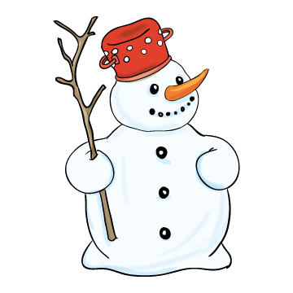

A cin-ke és a 
É-hes cin-ke röp-pen a vál-lá-ra. Vi-dá-man é-ne-kel-ni kez-dett lát-va a fi-nom ré-pa-or-rát. Kér-lel-ni kezd-te:
– Kap-hat-nék ré-pát? É-hen ha-lok, ha nem e-he-tek va-la-mit.
– Ö-röm-mel a-dok. Pár nap és már nem ta-lál-koz-ha-tunk.
– Nem jó itt ne-ked?
– Ked-ve-lem itt. De az én i-dőm le-járt.
– Mi-ért?
– Ol-va-dás-kor én is el-ol-va-dok. De majd a jö-vő té-len új-ra el-jö-vök.